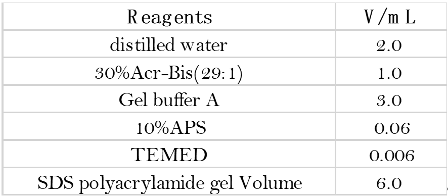

Transformation of E. coli
- Take 100 µL of melted receptor cells on ice, add 10 μL of the target plasmid, mix gently and leave on ice for 30 min.
- Heat stimulate at 42°C for 45-60 s in a water bath, transfer to an ice bath and leave for 2 min.
- Add 700 µL of sterile liquid LB medium containing the antibiotic Amp to the centrifuge tube, mix well and recover at 37°C for 60 min at 220 rpm.
- Pipette 20 μL of the recovery solution onto the LB solid medium containing Amp and place the plate upside down in an incubator at 37°C for overnight incubation.
Determining the optimum
concentration of iptg
concentration of iptg
- Rejuvenation of the bacterial broth
Take out the bacterial broth from the fridge and incubate it in a small volume for re-strengthening
Overnight at 37°C and 220rpm. - Expand the culture
Inoculate the re-strengthened bacterium into 25 mL of LB (amp+) and incubate in a shaker at 37 degrees and 220rpm.
- Induction of iptg
After step 2, the obtained bacterial broth was divided into 5 groups of about 5 mL each and numbered. 1 group continued to be incubated on a shaker at 37 degrees, 220rpm. The OD600 of the bacterial broth was measured and iptg (final concentration 0.5mM) was added to groups 2, 3, 4 and 5 at OD600=0.6, 0.8, 1 and 1.2 respectively. 3-4h incubation at 37 degrees, 220rpm.
- SDS-PAGE
Induction of iptg
- Pick a single colony from each plate into 4 LB (4 mL) tubes corresponding to the resistance, numbered "0"
"1" "2" "3 ".
Place the tubes in a shaker (37°C; 220r), incubate for a period of time and measure the OD value. - Add 700 μL of suspension from tube "0" to 100 μL (C=80%) of seed preserving glycerol, shake well and store in the freezer. (-20°C).
- Add 2 μL of IPTG to tubes "1", "2" and "3" of each group of bacteria, at a final concentration of 0.5 mM.
- Expression at 37°C for 3h to 4h.
Crude protein extraction
- Transfer E. coli to 2 mL centrifuge tubes (50 mL), 4°C, 12000rpm, 25min, discard supernatant and collect bacteriophage.
- 400 μL (2 mL of bacteriophage premise) PBS was used to wash the bacteriophage, followed by centrifugation at 4°C, 4000rpm, 5min, discard the PBS supernatant and collect the bacteriophage.
- Resuspend the bacterium using 1 mL PBS.
- The bacterial solution was placed in an ultrasonic cell crusher with 150W power, 1s working, 2s gap, temperature alarm set to 30°C and ultrasonic crushing in an ice bath. The total working time is 10-20 min, depending on the volume.
- After crushing, the sample is centrifuged at 4°C for 25min at 12000rpm and the supernatant is discarded and stored as the crude product.
SDS-PAGE
- Cleaning the glass plate
Hold the glass plate firmly with one hand and gently scrub it with the other hand with a little washing powder. Rinse with tap water after scrubbing both sides, then rinse with distilled water and leave to dry in the basket. - Gluing and sampling
- Align the glass panels and place them in the clamps to be stuck tightly. Then snap vertically onto the shelf ready for gluing. (The operation should be done so that the two glasses are aligned so as not to leak glue.)
- Preparation of the separating glue and glue concentrate: Configure 12% of the separating glue and 5%
of the glue concentrate in the order and proportion of the solutions in the table below.
When there is a fold line between the water and the glue, the glue has set. Wait 3 min for the gum to solidify before pouring off the top layer of water and blotting up the water with absorbent paper.
- Rinse the gel concentrate with water and place it in the electrophoresis bath. (Small glass plate facing inwards, large glass plate facing outwards. If you are running only one piece of glue, the other side of the tank should be padded with a plastic plate and the side with the letters should face outwards.)
- Electrophoresis
After the sample is added, cover the top lid, connect the electrophoresis instrument, turn on the switch of the electrophoresis instrument, control the voltage at 100-200V before the sample enters the glue, about 15-20min; after the bromophenol blue indicator in the sample reaches the separation glue, the voltage rises to 200V, keep the voltage stable during electrophoresis. The electrophoresis was stopped when the bromophenol blue indicator migrated to 1~2cm from the front, about 0.5-1hour. - Staining and decolorization
After electrophoresis, turn off the power, take out the glass plate, pry it gently with a knife in the gap between the lower corners of the short and long glass plates to separate the adhesive surface from one glass plate, then gently lift the film, insert a copper wire in the center of the indicator zone as a marker and put it into a large petri dish for staining, using 0.25% Kormas Brilliant Blue staining solution, stain for 2-4h, or overnight if necessary. Discard the staining solution and rinse the gel surface several times with distilled water, then add decolorizing solution and perform diffusion decolorization, changing the decolorizing solution frequently until the protein band is clear.